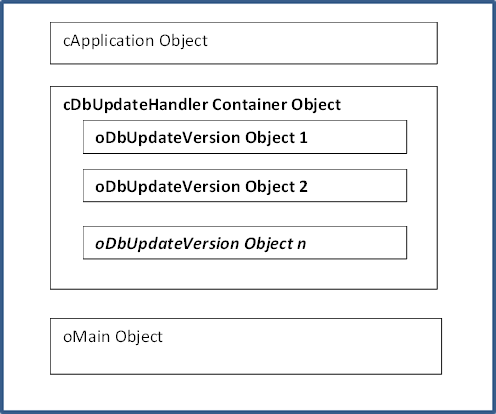

Overview
The Database Update Framework
If you haven't seen the introduction video, it is suggested to see it first: Help video
What is it?
It is a code based framework for automated database updates. The framework consists of a series of classes, a function library and two tool programs. The function library has messages that makes it easy to update databases for both the DataFlex Embedded and SQL databases. When a new version of your software is started at client site the database update starts automatically and all other users are locked out from using the program while the update is in progress. A series of checks are done prior starting the database update to ensure that nobody else is using it. All activities are automatically logged.
Note that all "Make Database Changes" functions are re-entrance enabled. That means that even if a function is called again to e.g. convert a table from Embedded (.dat) to SQL, and is called again - nothing will happen. All "Make Database Changes" functions first checks if the action has been called before and if so, does nothing.
To aid in making structural database changes the library class cDbUpdateFunctionLibrary was created. It has specialized SQL functions that avoids the need to drop and rebuild a table, as often can be the case when using the DataFlex database API Structure_End command. Embedded SQL (ESQL) is used to make changes directly at the SQL back end and changes are then synced back with the table's .int file(s).
Things the library can do is to create a new database, convert a table from embedded to SQL or attach to an existing SQL table, add a new column and populate it with a default value and lots more. One and each of these actions can be made with a single line of code.
You can also include SQL script files made by e.g. the 'Microsoft SQL Server Management Studio" to create an entire database complete with data, with a few lines of code, or whatever your needs are. This usage of "embedded SQL scripts" is a very powerful feature of the framework and can be used for all sorts of things. The script files are compiled into the program which makes them more secure from tampering from end users.
The cDbUpdateFunctionLibrary also have functions that has been build on top of the DataFlex database API (that uses Structure_Start/Structure_End) and they are best used with the DataFlex Embedded database, but are also available for SQL back-ends depending on the needs. It is important to understand that the full DataFlex language can be used to make whatever database updates that is needed, but "high level" functions are available to make your work easier. This makes the framework both flexible and versatile.
The container class cDbUpdateHandler is the foundation for the automated database update logic. All messages of the cDbUpdateFunctionLibrary are readily available as it has been imported to the cDbUpdateHandler class.
Inside the cDbUpdateHandler container object a series of cDbUpdateVersion objects are placed, - as siblings - one object for each new database revision update. The cDbUpdateVersion OnUpdate event is automatically called when the object is created and it in the OnUpdate event any database update code is written.
Before an update begins, three different checks are performed to make sure the database is not in use. When the update process is under way all errors are temporarily "muted" and collected by the cDbUpdateHandler object to not interrupt the update. Properties can be set to use a text based log file or database table, and if the log should be displayed after updates have been run or not.
After the database update(s) is/are completed the program will continue to run as normal. The next time the program is started all update code will be ignored, granted all cDbUpdateVersion objects OnUpdate events have been run successfully.
Start Here
•Start by reading the First Time Usage if the DataFlex Update Framework has never been used before.
•Setup your workspace by adding the DataFlex Update Framework as a library. See: Workspace Setup
•Follow the instructions in the chapter How To Use It.
Class Hierarchy
cObject
---cDbUpdateHandler
------cDbUpdateVersion
------cDbUpdateFunctionLibrary
------cDbUpdateLogFile
------cDbUpdateUserCount
------cSQLConnectionHandler
---------cSQLConnectionIniFile
---------cDbUpdateDatabaseDriver
Note: The class hierarchy above is really a "pseudo" hierarchy because the only two classes that needs to be instantiated are the cDbUpdateHandler and cDbUpdateVersion. All the rest are automatically created/instantiated by the cDbUpdateHandler container object.
Schematic Code Overview
|
|
|
|
|
 |
Sample Code
Object oDbUpdateHandler is an cDbUpdateHandler
Set Data_File_Field to File_Field DbVersion.DatabaseVersion
Object oDbUpdateVersion1 is a cDbUpdateVersion
Set pnVersionNumber to 1
Declare_Datafile SalesP
Declare_Datafile Customer
// Put code in the OnUpdate event
Procedure OnUpdate
Boolean bOK
Get ApiTableConvertToSQL_Ex SalesP.File_Number MSSQLDRV_ID True True True True to bOK
Get SQLColumnRename Customer.File_Number "Purchases" "YearlyPurchases" MSSQLDRV_ID to bOK
Get SQLColumnAdd Customer.File_Number "WebSite" DF_ASCII_DUF 30 0 True "www.rdctools.com" to bOK
End_Procedure
End_Object
Object oDbUpdateVersion2 is a cDbUpdateVersion
Set pnVersionNumber to 2
// ...or put your update code in a separate package:
Use DbUpdateVersion2.pkg
:
End_Object
End_Object
User interaction
By default the user is presented with a YesNo box when the program is started that asks if it is OK to start the database update. If No is selected the program will exit. A status panel is shown while the update is taking place informing the user what is going on. After the update(s) is done a message informs how the update finished. If any errors occurred a log file is displayed, with a message that informs the user that the update was unsuccessful and that the program will exit.
The pbSilentMode property of the cDbUpdateHandler class controls if user interaction should take place or not. It is False by default and it is not advised to set it to True. But that can be useful in e.g. a webapp program.
Safety precautions
First of all you need to ensure that the user running the program has sufficient rights to make structural changes to the database, this is particularly true with SQL databases.
Two different cDbUpdateUserCount objects are created and maintained by the cDbUpdateHandler class to make it as safe as possible to start a database update. One is used to lock all other users out from running the program while an update is in progress. The second is used to count users that concurrently uses/runs this program. If number of users is greater than 1 (the user that runs the update) the update will not start and the program will exit. The logic used by the cDbUpdateUserCount is bit-locking and two files are automatically created in the workspace Programs folder. These bits will automatically be released when the program ends. Windows will release the bit-locking in the event the program should crash or end unpredictably.
Three different checks are performed before any database update work is started. In addition to the described bit-locking user count, the DataFlex license is queried for how may persons that currently is using the license. The third and last check only applies to the DataFlex embedded database; but it is sufficient that at least one table in Filelist.cfg is a DataFlex embedded table, like CodeMast or CodeType. The logic checks that all table can be opened exclusively, aka not opened by any other program.
If any of these three tests fails the database is in use and the program is prevented to continue.
Note that it is not possible to run the program until all scheduled database updates has taken place (aka all OnUpdate procedures have been executed successfully. So even if one of a series of cDbVersion object's OnUpdate events was unsuccessful, the program will not continue to run. In addition to - what was said above - no one can run the program while an update is taking place. Such users will be presented with a message that the database is being updated and asked to check in later.
Important: Even though three different tests are being carried out before an update starts this is not a guarantee that the database is not in use by somebody else. For instance a SQL database might be open in e.g. Microsoft SQL Server Management Studio and there is simply no way to tell. So take great care and check that it is OK to begin a database update!
SQL Connections
If an SQL back-end will be used, at least one SQL connection must be setup that consists of a Connection ID and login details to the Server/DSN. This information will automatically be read and applied when the Database Update Framework is initialized. The SQLConnections tool is used to maintain SQL connections.
The SQLConnections tool
The SQLConnections.exe tool was made to maintain SQL connections for a workspace. Multiple connection ID's can be managed, but only one can be enabled/active at a time. Use the tool to add/edit/delete connections for the current workspace. The SQLConnections.ini is created in the workspace Programs folder and the info is automatically read when the Database Update Framework is initialized. Connection passwords are automatically encrypted/decrypted to/from the ini file. The program can easily be setup to run from the Studio's Tools menu, just start the program and press the "Add to Studio" button.
Note: If DataFlex 19 or later is used and a cConnection object has been placed inside the cApplication object those settings will be picked up automatically by the framework. Note though that with the SQLConnection program one can set more properties then what is possible with the DF19 cConnection class/tools. So it is quite possible to use both; setup the standard cConnection parameters with the tools provided by Data Access Worldwide and using the same Connection ID, add the other settings with the SQLConnection tool.